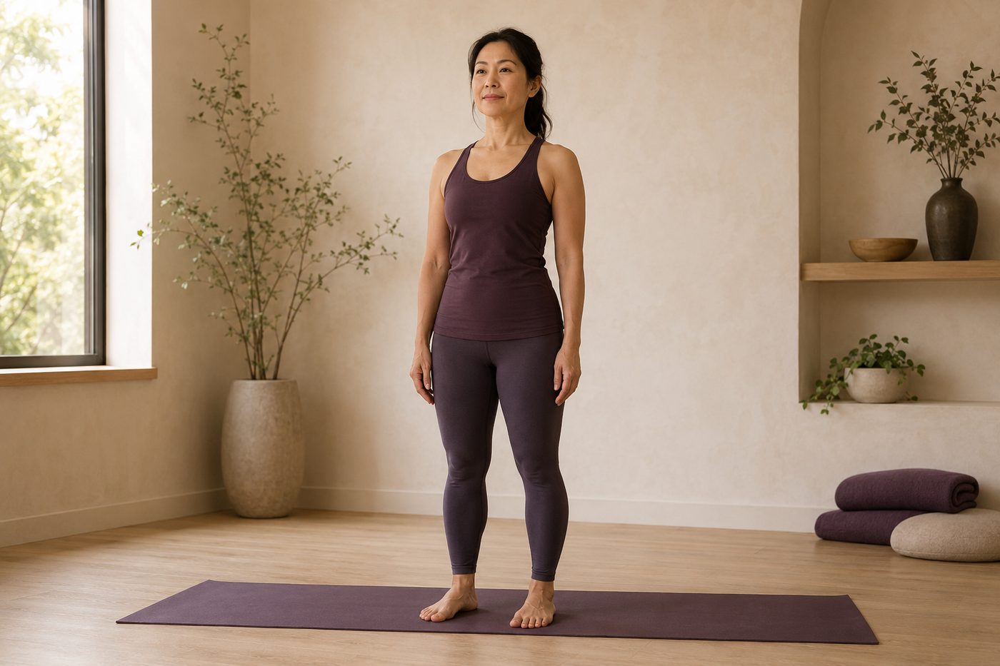

站姿體式在練的，其實是你的「地基」

你有沒有注意過，有些人就算只是站著，看起來也特別「挺」、特別「穩」？瑜伽裡有個看起來最無聊的動作，叫「山式」——就是雙腳站好，什麼都不做。但你真的認真站一次會發現，要站得直、站得穩、又不費力，一點都不簡單。因為站姿體式在練的，從來不是「站著」，而是你整個身體的地基。
為什麼「站著不動」，反而是最難的體式？
我們每天都在站，卻很少有人「站好」。多數人習慣的站姿，其實是把體重「掛」在身體上——膝蓋往後頂、骨盆往前推、重量壓在關節和韌帶上，靠骨頭互相卡住，肌肉幾乎不出力。這樣站很省力，卻也很鬆散，時間久了就換來腰痠、膝蓋緊、脖子往前掉。
山式（Tadasana）在做的事，正好相反。它要你用肌肉「主動」把身體排好，而不是靠韌帶被動撐著。腳掌踩穩、大腿微微收、骨盆擺正、脊椎往上延伸、頭頂像被一條線輕輕提起——每個環節都要你去感覺、去組織。這也是為什麼很多人第一次認真做山式，會忍不住說「站著居然也會累」。因為那可能是你第一次，用整個身體在站。
換句話說，你以為山式是休息式，其實它是站姿的「總複習」。後面的戰士式、三角式、樹式，全都是山式的變化題。地基沒打好，上面疊什麼都會晃。
地基，是從腳掌一路疊上去的
「地基」不是一個抽象的形容。它是一條從地面往上的排列鏈，每一層都撐著上一層：
- 腳掌：這是你全身唯一接觸地面的地方。理想的踩地，是三個點平均分攤重量——大拇趾球、小趾球、腳跟，中間拱起足弓。腳掌踩不穩，上面全都跟著搖（這也是為什麼老師老是提醒「腳掌踩穩」，穩定真的是從腳開始的）。
- 小腿與大腿：脛骨前肌、股四頭肌、膕旁肌一起工作，把膝蓋帶到「不卡死、也不軟腳」的位置，力量才能順順往上傳。
- 骨盆：這是地基的轉盤。骨盆維持中立（不過度前傾、也不後傾），上面的脊椎才立得直；髂腰肌和臀大肌在這裡負責前後的平衡。
- 核心與脊椎：腹橫肌、多裂肌像身體內層的束腹，從深處穩住脊椎；接著脊椎一節一節往上延伸，把身體「立」起來，而不是「塌」下去。
看懂這條鏈，你會發現一件事：站不穩、站不直，往往不是某一塊肌肉的錯，而是這條鏈斷在了某一層。
地基是一條從腳掌到頭頂的排列鏈——哪一層散了，上面全都跟著晃。
你以為站不穩是「腿沒力」，其實是地基散了
很多人平衡站不穩，第一個反應是「我腿太沒力」，於是拚命夾、用力繃緊全身，結果反而更抖、更快累。這裡有個很多人沒想通的關鍵：穩定不是靠「用力」，是靠「排列」。
想像疊積木——只要每一塊都對齊了，塔就穩穩立著，你根本不用死命去扶。身體也是一樣：當腳掌、骨盆、脊椎排在同一條重力線上，你需要的其實只是「剛剛好」的張力，多一分是僵，少一分是塌。那些站得很輕鬆的人，不見得肌肉特別強壯，而是他們把重量交給了正確的排列，不再硬扛。
所以站不穩，常常不是力氣的問題，是「找不到中線」——重心沒有落在支撐點的正上方，身體只好一直靠小肌肉去救、去晃。這時候需要的不是更用力，而是先把地基重新對齊。你以為要練得「更有力」，其實該先練的，是「更會排」。
壁繩怎麼幫你「感覺」到對的地基
難就難在：排列這種事，看不到，很多時候也感覺不到。你以為自己站直了，鏡子裡卻是骨盆前推、肋骨外翻。這正是壁繩好用的地方。
壁繩固定在牆上，能給你一個穩定的支撐與借力點。當繩子輕輕托住或牽引你的骨盆、軀幹，你就不必再花全部力氣去「維持不倒」，可以空出注意力，去感覺「原來骨盆擺正是這種感覺」「原來脊椎延伸是往上長高、不是往後仰」。等身體慢慢記住了對的排列，再一點一點把支撐收掉，地基就會留在你身上。想更完整認識這套工具，可以看認識壁繩瑜伽。
今天可以先記住的一件事
如果這篇只留一句話給你，那就是：站姿不是「站著」，是把身體從腳掌一路排到頭頂。今天你可以先試一個小練習——赤腳站著，把重量平均放到腳掌的三個點上，感覺足弓輕輕拱起，再想像頭頂被一條線往上提，讓脊椎變長一點點。不用夾、不用繃，只要對齊就好。
地基不是一天蓋好的。重心的感覺、骨盆中立的位置，都要一次次練習才會慢慢長出來。先求「站得對」，再求「站得久」，你的體態就會從最底層開始，一點一點立起來。
本頁為體態與姿勢的一般衛教與練習分享，非醫療診斷或治療。若有疼痛、舊傷或特殊病史，請先諮詢合格醫療專業人員。